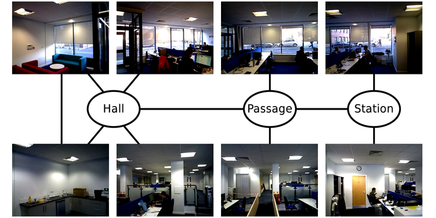
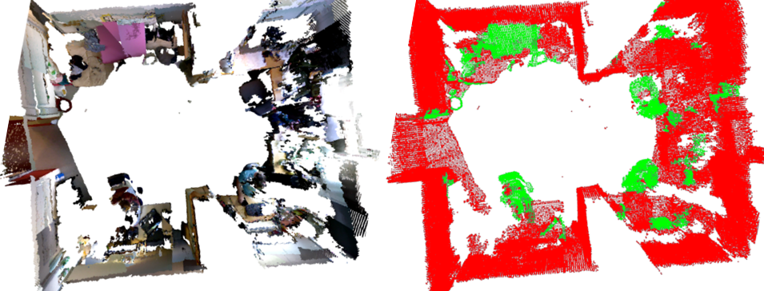

This dataset contains information about people and object presence gathered in three different environments. The dataset is divided in three smaller ones according to the environment these were gathered in:
| |
| Aruba apartment visualisation | Aruba sensor layout (see CASAS) |
The Aruba folder contains locations.min, which contains the location (room) of a person in a small apartment every minute for 16 weeks. The locations.names indicate which rooms corresponds to which number. Example: number 0 on line 10 of the locations.min means that in 10th minute after midnight of the first day, the person was in the Master bedroom. Aruba was extracted from the CASAS datasets.
|  |
| Brayford office locations and topological structure |
The Brayford directory contains presence of people every 10 minutes on eight different areas in an open-plan office. Again, locations.names file describes the locations. Example: Having '0' on line 6 of file 'learning_06.txt' means that there was no-one at 1:00AM in the kitchenette.
|  |
| KTH dataset: object retrieval from point cloud data |
The KTH data containe presence of objects observed by a mobile robot at different rooms of the CAS/KTH. The observations are stored in *.occ files that have 'epoch time' + presence of a given object at that time. Description of the individual objects is also provided in the clusters_meaning file. Example: line 50 of the test/31.occ file indicates that 'Johan's laptop' was present at time 1411317123 (which is Sunday September 21, 2014 18:32:03).
All of these datasets are available for download in a single archive file. After you unzip the file, you get three folders which correspond to the individual datasets.
If you use the dataset for your research, please cite our paper that describes it. We attached a bibtex record for your convenience. If you use the Aruba subset, you must also acknowledge the original CASAS paper.